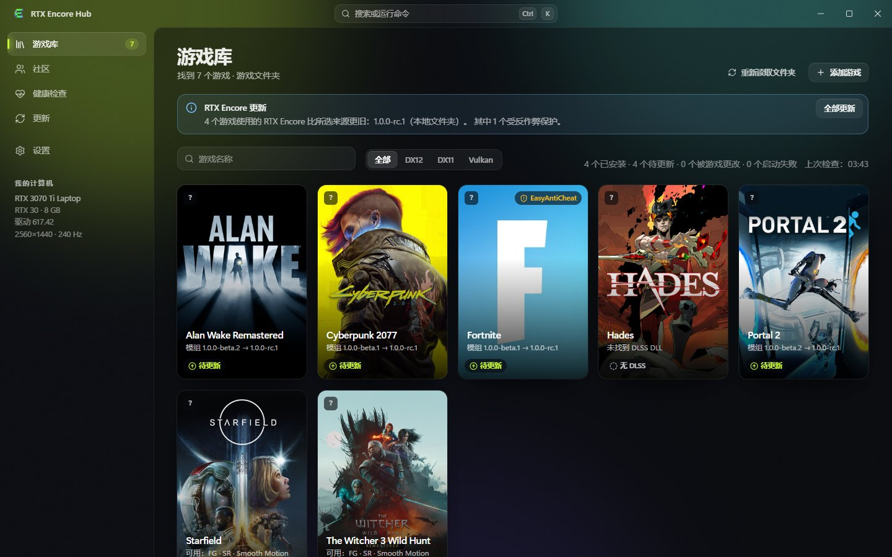
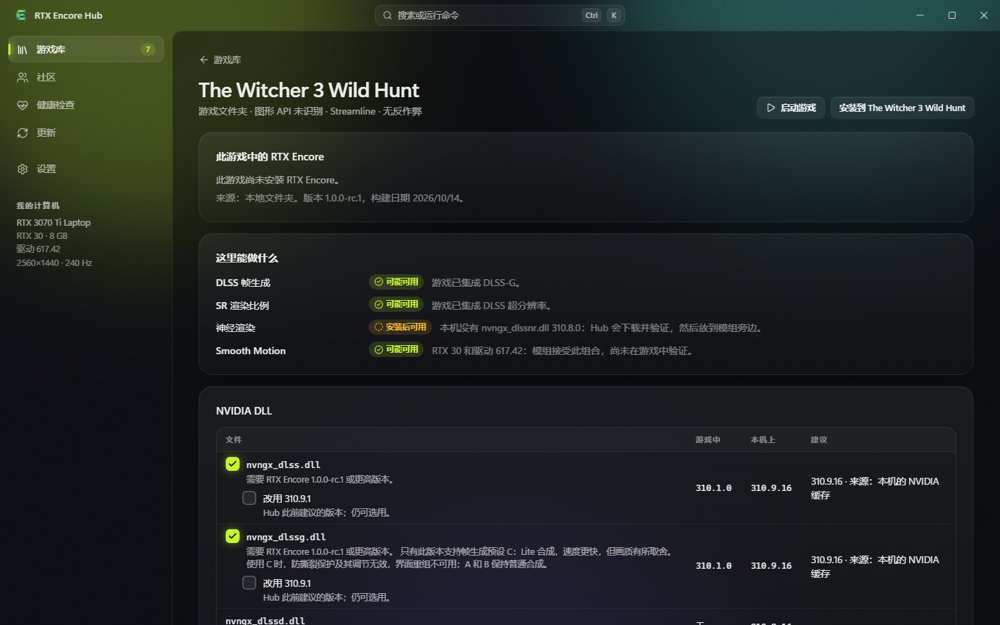
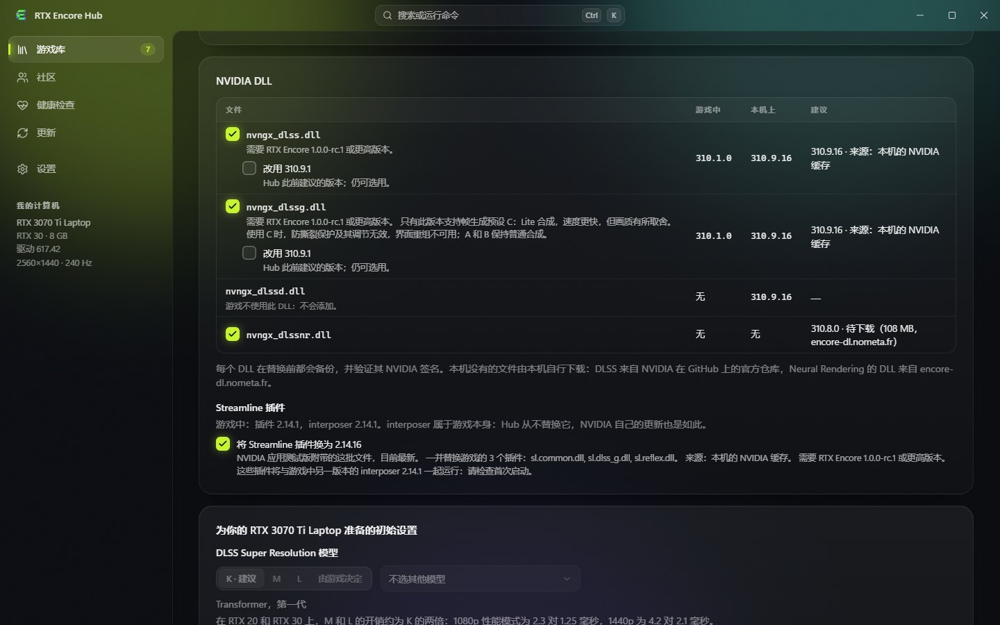

您的游戏库。您的安装。您的回退之路。
RTX Encore 的 Windows 配套应用。它会找到您的游戏，连同所需的 NVIDIA 文件一起安装模组，让一切保持最新，并且随时可以把游戏恢复原状。
Windows 10 和 11，x64 · 英语、法语和简体中文 · 安装无需管理员权限

真实应用截图，使用由替身游戏文件夹组成的演示游戏库。
为什么使用 Hub，而不是手动复制文件
在多个游戏中安装模组，意味着要找文件夹、核对 DLL 版本、保存备份，还要记住哪些需要更新。Hub 会替您完成，并在动手之前先展示它要做什么。
nvngx_dlssnr.dll 310.8.0，也就是模组要求的那个确切构建，会被下载、验证并放在模组旁边。它能做什么
一个游戏库
Steam、Epic 和 GOG 的游戏、您添加的文件夹，或通过可执行文件添加的单个游戏。每个磁贴都会显示游戏的状态：未安装、已安装、待更新、被游戏修改、失败。
每个游戏一个页面
RTX Encore 在您的显卡和驱动上能做什么：帧生成、DLSS 渲染比例、Smooth Motion、Neural Rendering，以及原因。
合适的 NVIDIA 文件
游戏中的 RTX Encore 所支持的最新 DLSS 和 Streamline 版本，来源是本机已有的文件或下载。只有带有效 NVIDIA 签名的 DLL 才会被接受。
为所有游戏统一选择一次
在设置中统一选择 DLSS 和 Streamline 的版本以及您的 DLSS 预设。在某个游戏中取消勾选的内容会在该游戏中保持不变。
可回退的安装
写入任何内容之前先显示方案，要么完整写入，要么完全不写，并撤销被中断的安装。只有在文件夹需要时才请求管理员权限。
更新
RTX Encore 的发布版本及其说明，可更新单个游戏或全部游戏。Hub 会查找自身的新版本；更新带有签名。
设置
用表单编辑 rtx-encore.jsonc，为每个游戏保存命名的设置组合，为您的显卡建议起始设置，并在驱动配置文件中设置 DLSS Super Resolution 模型。
健康与备份
启动游戏，观察其第一分钟，并列出游戏可以还原到的每个状态。
安装之前先看清楚
Hub 对一个游戏的说明是根据其文件、您的显卡和驱动推断出来的。这并不保证某项功能在该游戏中可用，也不测量任何性能。


快速开始
- 从发布页面下载
RTX-Encore-Hub-Setup-<version>.exe并运行。它只为您的账户安装。也可以下载无需安装的RTX-Encore-Hub-Portable-<version>.zip：解压后运行rtx-encore-hub.exe。 - 打开游戏库。Steam、Epic 和 GOG 的游戏已经在那里；可在设置中添加其他文件夹。
- 打开某个游戏的页面，查看这里能做什么，然后点击安装。写入任何内容之前，方案会列出每一个文件。
- 在健康检查中，启动并验证会启动游戏，并告诉您它的第一分钟情况如何。
- RTX Encore 发布新版本时，游戏库中的全部更新会更新所有游戏。